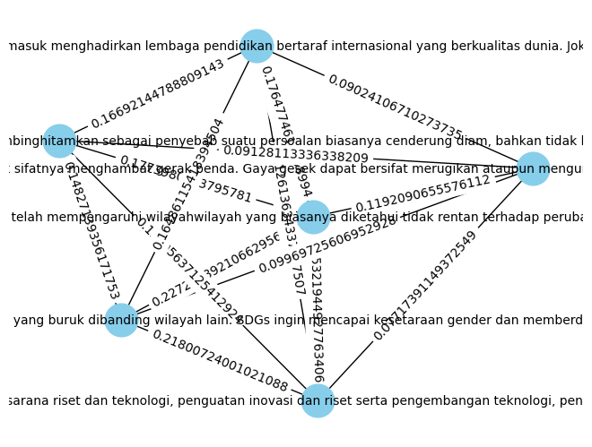

TUGAS 3 CLOSENESS CENTRALITY#
from nltk.tokenize import word_tokenize
from nltk.corpus import stopwords
from sklearn.feature_extraction.text import TfidfVectorizer
from sklearn.feature_extraction.text import CountVectorizer
import warnings
import pandas as pd
import numpy as np
import nltk
import re
import csv
nltk.download('stopwords')
nltk.download('punkt')
warnings.filterwarnings('ignore')
[nltk_data] Downloading package stopwords to /root/nltk_data...
[nltk_data] Package stopwords is already up-to-date!
[nltk_data] Downloading package punkt to /root/nltk_data...
[nltk_data] Package punkt is already up-to-date!
df = pd.read_csv('https://raw.githubusercontent.com/Feb11F/dataset/main/Data%20Berita%20Detik%20(1).csv')
df
| Judul | Tanggal | Artikel | Category | |
|---|---|---|---|---|
| 0 | Ilmuwan Laporkan Perubahan Iklim Ancam Kehidup... | Kamis, 02 Nov 2023 07:30 WIB | Para ilmuwan memperingatkan kondisi Bumi yang ... | Edu |
| 1 | Badan Riset dan Inovasi Nasional Didirikan ole... | Kamis, 02 Nov 2023 07:00 WIB | Indonesia memiliki badan atau lembaga yang ber... | Edu |
| 2 | Apa Itu SDGs? Ini Pengertian dan 17 Tujuan Glo... | Kamis, 02 Nov 2023 06:30 WIB | Pernahkah detikers mendengar istilah SDGs? SDG... | Edu |
| 3 | Apa Itu Gaya Gesek? Pengertian, Jenis, Rumus, ... | Kamis, 02 Nov 2023 06:00 WIB | Detikers, pernahkah kamu mendorong meja dan me... | Edu |
| 4 | Jokowi Letakkan Batu Pertama Sekolah di IKN Nu... | Rabu, 01 Nov 2023 20:00 WIB | Presiden Joko Widodo (Jokowi) meletakkan batu ... | Edu |
| 5 | Hati-hati! 5 Kebiasaan Orang Tua Ini Bisa Rusa... | Rabu, 01 Nov 2023 19:45 WIB | Peran dan kebiasaan orang tua akan sangat memp... | Edu |
| 6 | Pendaftaran S2 Unair 2023 Kembali Dibuka, Cek ... | Rabu, 01 Nov 2023 19:34 WIB | Pendaftaran jenjang Magister atau S2 di Univer... | Edu |
| 7 | Identitas Buku: Pengertian, Unsur, Fungsi, dan... | Rabu, 01 Nov 2023 18:45 WIB | Ketika meresensi buku atau mengulas buku terda... | Edu |
| 8 | Pengertian Genosida yang Jadi Alasan Petinggi ... | Rabu, 01 Nov 2023 18:30 WIB | Craig Mokhiber mengundurkan diri dari jabatann... | Edu |
| 9 | BRI Kembali Buka BFLP General dan IT buat Lulu... | Rabu, 01 Nov 2023 17:56 WIB | Sumber Daya Manusia (SDM) yang unggul menjadi ... | Edu |
| 10 | Gelombang Panas di Laut, Miliaran Kepiting Sal... | Rabu, 01 Nov 2023 17:56 WIB | Populasi kepiting salju di Pantai Alaska diket... | Edu |
| 11 | Beasiswa Sekolah SMA Unggulan CT ARSA Foundati... | Rabu, 01 Nov 2023 17:30 WIB | SMA Unggulan CT ARSA Foundation Sukoharjo, Jaw... | Edu |
| 12 | 4 Aplikasi yang Bisa Bantu UTS Kamu, Siswa-Mah... | Rabu, 01 Nov 2023 17:00 WIB | Memasuki masa ujian, siswa dan mahasiswa bisa ... | Edu |
| 13 | Respirasi Aerob: Pengertian, Tahapan, Ciri, da... | Rabu, 01 Nov 2023 16:45 WIB | Semua makhluk memerlukan respirasi untuk menda... | Edu |
| 14 | Bencana Kelaparan di Yahukimo: Sebab dan Penan... | Rabu, 01 Nov 2023 16:30 WIB | 24 Orang meninggal dunia akibat bencana gagal ... | Edu |
def cleaning(text):
# Remove non-alphabetic characters (letters, spaces, and punctuation other than periods)
text = re.sub(r'[^a-zA-Z\s.,]', '', text).strip()
return text
df['Cleaning'] = df['Artikel'].apply(cleaning)
df['Cleaning']
0 Para ilmuwan memperingatkan kondisi Bumi yang ...
1 Indonesia memiliki badan atau lembaga yang ber...
2 Pernahkah detikers mendengar istilah SDGs SDGs...
3 Detikers, pernahkah kamu mendorong meja dan me...
4 Presiden Joko Widodo Jokowi meletakkan batu pe...
5 Peran dan kebiasaan orang tua akan sangat memp...
6 Pendaftaran jenjang Magister atau S di Univers...
7 Ketika meresensi buku atau mengulas buku terda...
8 Craig Mokhiber mengundurkan diri dari jabatann...
9 Sumber Daya Manusia SDM yang unggul menjadi sa...
10 Populasi kepiting salju di Pantai Alaska diket...
11 SMA Unggulan CT ARSA Foundation Sukoharjo, Jaw...
12 Memasuki masa ujian, siswa dan mahasiswa bisa ...
13 Semua makhluk memerlukan respirasi untuk menda...
14 Orang meninggal dunia akibat bencana gagal pan...
Name: Cleaning, dtype: object
from nltk.tokenize import sent_tokenize
# Fungsi untuk mengekstrak artikel menjadi kalimat
def extract_sentences(article):
sentences = sent_tokenize(article)
return sentences
# Menerapkan fungsi extract_sentences ke setiap baris dalam kolom 'artikel'
df['Kalimat'] = df['Cleaning'].apply(extract_sentences)
df['Kalimat']
0 [Para ilmuwan memperingatkan kondisi Bumi yang...
1 [Indonesia memiliki badan atau lembaga yang be...
2 [Pernahkah detikers mendengar istilah SDGs SDG...
3 [Detikers, pernahkah kamu mendorong meja dan m...
4 [Presiden Joko Widodo Jokowi meletakkan batu p...
5 [Peran dan kebiasaan orang tua akan sangat mem...
6 [Pendaftaran jenjang Magister atau S di Univer...
7 [Ketika meresensi buku atau mengulas buku terd...
8 [Craig Mokhiber mengundurkan diri dari jabatan...
9 [Sumber Daya Manusia SDM yang unggul menjadi s...
10 [Populasi kepiting salju di Pantai Alaska dike...
11 [SMA Unggulan CT ARSA Foundation Sukoharjo, Ja...
12 [Memasuki masa ujian, siswa dan mahasiswa bisa...
13 [Semua makhluk memerlukan respirasi untuk mend...
14 [Orang meninggal dunia akibat bencana gagal pa...
Name: Kalimat, dtype: object
df['Kalimat'][0]
['Para ilmuwan memperingatkan kondisi Bumi yang sedang mengalami masalah perubahan iklim dalam studi terbaru berjudul The state of the climate report entering uncharted territory dalam BioScience pada Oktober lalu.',
'Berdasarkan tanda yang digunakan untuk melacak perubahan iklim, diantaranya menunjukkan rekor ekstrim.',
'Hal tersebut meliputi pengukuran suhu ratarata permukaan Bumi, subsidi bahan bakar fosil, permukaan es laut, dan tutupan hutan global.',
'Sebelum tahun , suhu ratarata global diketahui tidak pernah , derajat celcius lebih tinggi dari suhu pada masa praindustri.',
'Sedangkan pada tahun , selama hari saja suhu global telah melampaui ambang batas.',
'SCROLL TO CONTINUE WITH CONTENT Sebagai contoh kondisi suhu pada bulan Juli lalu di mana menjadi bulan terpanas, mungkin kondisi tersebut baru terjadi dalam .',
'tahun terakhir.',
'Rekor suhu terpanas tersebut disebabkan oleh aktivitas manusia dan diperburuk oleh pola iklim berulang, yang biasa dikenal sebagai El Nino.',
'Kondisi tersebut telah menyusutkan es laut di Antartika pada level yang mengkhawatirkan pada tahun ini.',
'Antartika telah mengalami atau mencapai tingkat es titik terendah pada tahun ini.',
'Tidak hanya itu, dampak perubahan iklim yang ekstrem juga menyebabkan kebakaran hutan, seperti yang terjadi di Kanada.',
'Kebakaran tersebut telah menghanguskan lahan seluas juta hektar dan menjadi pemegang rekor sebelumnya pada tahun yang membakar juta hektar lahan hangus.',
'Faktanya dampak perubahan iklim telah mempengaruhi wilayahwilayah yang biasanya diketahui tidak rentan terhadap perubahan iklim ekstrim tersebut.',
'Sebagai contoh adalah Tiongkok bagian timur laut yang dilanda banjir sangat parah dan menyebabkan lebih dari satu juta orang mengungsi.',
'Kemudian, hujan deras juga terjadi di negara bagian Sikkim, India dan menyebabkan danau glasial meluap sehingga menyapu jembatan serta jalan.',
'Selain kedua daerah tersebut, menurut laporan dari para ilmuwan menyatakan bahwa badai Mediterania yang dahsyat juga terjadi di kota Derna, Libya dan menghanyutkan seluruh lingkungan.',
'Kehidupan di planet kita jelas sedang dikepung, kata William Ripple, ahli ekologi di Oregon State University dalam situs Oregon State University Newsroom.',
'Tren statistik menunjukkan pola variabel dan bencana terkait iklim yang sangat mengkhawatirkan, tambahnya.',
'Para ilmuwan berpendapat bahwa manusia mendorong sistem Bumi masuk ke dalam ketidakstabilan yang berbahaya.',
'Mereka juga menduga atau memperkirakan bahwa pada akhir abad ini sekitar sepertiga hingga setengah populasi dunia atau sekitar tiga hingga enam miliar orang akan terpaksa keluar dari wilayah layak huni.',
'Sebab, diperkirakan manusia akan menghadapi cuaca panas yang parah dan terbatasnya ketersediaan pangan.',
'Menanggapi kondisi ini diharapkan para politisi atau pihak berwenang harus segera memperjuangkan kebijakan yang dapat memenuhi kebutuhan rakyatnya.',
'Upaya tersebut akan memberikan kesempatan terbaik untuk bertahan dari tantangantantangan dalam jangka panjang, tulis para ilmuwan dalam studi.']
from sklearn.feature_extraction.text import TfidfVectorizer
df['Dokumen'] = df['Kalimat'].apply(lambda sentences: ' '.join(sentences))
tfidf_vectorizer = TfidfVectorizer()
tfidf_matrix = tfidf_vectorizer.fit_transform(df['Dokumen'])
tfidf_df = pd.DataFrame(data=tfidf_matrix.toarray(), columns=tfidf_vectorizer.get_feature_names_out())
tfidf_df
| aac | abad | ac | acara | ada | adalah | adanya | adapun | adenine | adil | ... | yaitu | yakni | yang | yazidi | yogyakarta | york | youtube | yuk | yunani | zat | |
|---|---|---|---|---|---|---|---|---|---|---|---|---|---|---|---|---|---|---|---|---|---|
| 0 | 0.00000 | 0.045404 | 0.00000 | 0.000000 | 0.000000 | 0.017806 | 0.000000 | 0.000000 | 0.000000 | 0.000000 | ... | 0.000000 | 0.000000 | 0.206418 | 0.000000 | 0.000000 | 0.000000 | 0.000000 | 0.000000 | 0.000000 | 0.000000 |
| 1 | 0.00000 | 0.000000 | 0.00000 | 0.000000 | 0.000000 | 0.008570 | 0.000000 | 0.000000 | 0.000000 | 0.000000 | ... | 0.000000 | 0.000000 | 0.085153 | 0.000000 | 0.000000 | 0.000000 | 0.000000 | 0.000000 | 0.000000 | 0.000000 |
| 2 | 0.00000 | 0.000000 | 0.00000 | 0.000000 | 0.009953 | 0.021297 | 0.000000 | 0.000000 | 0.000000 | 0.054308 | ... | 0.018522 | 0.000000 | 0.193991 | 0.000000 | 0.000000 | 0.000000 | 0.000000 | 0.000000 | 0.000000 | 0.000000 |
| 3 | 0.00000 | 0.000000 | 0.00000 | 0.000000 | 0.028368 | 0.020233 | 0.000000 | 0.000000 | 0.000000 | 0.000000 | ... | 0.008798 | 0.000000 | 0.128450 | 0.000000 | 0.000000 | 0.000000 | 0.000000 | 0.000000 | 0.000000 | 0.000000 |
| 4 | 0.00000 | 0.000000 | 0.00000 | 0.000000 | 0.062570 | 0.000000 | 0.037934 | 0.032939 | 0.000000 | 0.000000 | ... | 0.019406 | 0.000000 | 0.221731 | 0.000000 | 0.000000 | 0.000000 | 0.037934 | 0.000000 | 0.000000 | 0.000000 |
| 5 | 0.00000 | 0.000000 | 0.00000 | 0.000000 | 0.025632 | 0.027423 | 0.000000 | 0.000000 | 0.000000 | 0.000000 | ... | 0.023849 | 0.000000 | 0.136246 | 0.000000 | 0.000000 | 0.000000 | 0.000000 | 0.000000 | 0.000000 | 0.000000 |
| 6 | 0.04439 | 0.000000 | 0.04439 | 0.000000 | 0.000000 | 0.017408 | 0.000000 | 0.077091 | 0.000000 | 0.000000 | ... | 0.022709 | 0.000000 | 0.043245 | 0.000000 | 0.000000 | 0.000000 | 0.000000 | 0.000000 | 0.000000 | 0.000000 |
| 7 | 0.00000 | 0.000000 | 0.00000 | 0.000000 | 0.000000 | 0.050033 | 0.000000 | 0.000000 | 0.000000 | 0.000000 | ... | 0.026107 | 0.000000 | 0.132577 | 0.000000 | 0.000000 | 0.000000 | 0.000000 | 0.000000 | 0.000000 | 0.000000 |
| 8 | 0.00000 | 0.000000 | 0.00000 | 0.000000 | 0.022665 | 0.032332 | 0.000000 | 0.000000 | 0.000000 | 0.000000 | ... | 0.000000 | 0.000000 | 0.227570 | 0.041223 | 0.000000 | 0.041223 | 0.000000 | 0.000000 | 0.082446 | 0.000000 |
| 9 | 0.00000 | 0.000000 | 0.00000 | 0.000000 | 0.000000 | 0.012893 | 0.000000 | 0.000000 | 0.000000 | 0.000000 | ... | 0.016818 | 0.028547 | 0.074731 | 0.000000 | 0.028547 | 0.000000 | 0.000000 | 0.000000 | 0.000000 | 0.000000 |
| 10 | 0.00000 | 0.000000 | 0.00000 | 0.000000 | 0.000000 | 0.020515 | 0.000000 | 0.000000 | 0.000000 | 0.000000 | ... | 0.000000 | 0.000000 | 0.186862 | 0.000000 | 0.000000 | 0.000000 | 0.000000 | 0.000000 | 0.000000 | 0.000000 |
| 11 | 0.00000 | 0.000000 | 0.00000 | 0.000000 | 0.000000 | 0.000000 | 0.000000 | 0.000000 | 0.000000 | 0.000000 | ... | 0.000000 | 0.000000 | 0.059326 | 0.000000 | 0.039659 | 0.000000 | 0.000000 | 0.000000 | 0.000000 | 0.000000 |
| 12 | 0.00000 | 0.000000 | 0.00000 | 0.034669 | 0.038124 | 0.027192 | 0.000000 | 0.000000 | 0.000000 | 0.000000 | ... | 0.000000 | 0.000000 | 0.101324 | 0.000000 | 0.000000 | 0.000000 | 0.000000 | 0.030104 | 0.000000 | 0.000000 |
| 13 | 0.00000 | 0.000000 | 0.00000 | 0.000000 | 0.000000 | 0.072426 | 0.000000 | 0.000000 | 0.023085 | 0.000000 | ... | 0.047240 | 0.000000 | 0.089959 | 0.000000 | 0.000000 | 0.000000 | 0.000000 | 0.020046 | 0.000000 | 0.046171 |
| 14 | 0.00000 | 0.000000 | 0.00000 | 0.000000 | 0.065196 | 0.000000 | 0.000000 | 0.000000 | 0.000000 | 0.000000 | ... | 0.000000 | 0.051482 | 0.125143 | 0.000000 | 0.000000 | 0.000000 | 0.000000 | 0.000000 | 0.000000 | 0.000000 |
15 rows × 2067 columns
# # Menggabungkan DataFrame asli dengan DataFrame TF-IDF
# result_df = pd.concat([df[['Judul']], tfidf_df], axis=1)
# result_df
# Menyimpan hasilnya ke dalam file CSV baru
output_file_path = 'berita_dalam_kalimat1.csv'
df.to_csv(output_file_path, index=False)
# import library untuk menghitung cosinus similarity
from sklearn.metrics.pairwise import cosine_similarity
from sklearn.feature_extraction.text import TfidfVectorizer
import networkx as nx
import matplotlib.pyplot as plt
from sklearn.metrics.pairwise import cosine_similarity
len_kalimat = df['Dokumen'].shape[0]
temp = []
node = 0
for i in range(len_kalimat):
for j in range(len_kalimat - i):
tfidf_vectorizer = TfidfVectorizer()
tfidf_matrix = tfidf_vectorizer.fit_transform([df['Dokumen'][i], df['Dokumen'][i+j]])
cosine_sim = cosine_similarity(tfidf_matrix[0], tfidf_matrix[1])
similarity_score = cosine_sim[0][0]
temp.append(["node-{} {}&{}".format(node, i, i+j), similarity_score])
node +=1
temp
[['node-0 0&0', 1.0000000000000004],
['node-1 0&1', 0.2362065469587537],
['node-2 0&2', 0.34149599485946275],
['node-3 0&3', 0.1954404114937564],
['node-4 0&4', 0.2711123394290881],
['node-5 0&5', 0.2530828620678776],
['node-6 0&6', 0.1700844544670314],
['node-7 0&7', 0.19767682048525687],
['node-8 0&8', 0.3610948761753333],
['node-9 0&9', 0.2545552818933024],
['node-10 0&10', 0.3827744777634448],
['node-11 0&11', 0.1475862083428952],
['node-12 0&12', 0.17734332559751098],
['node-13 0&13', 0.23150660388199845],
['node-14 0&14', 0.33754567867367086],
['node-15 1&1', 0.9999999999999999],
['node-16 1&2', 0.35892622189459694],
['node-17 1&3', 0.1457038825684328],
['node-18 1&4', 0.18165731907497862],
['node-19 1&5', 0.19575431113074276],
['node-20 1&6', 0.2340059299659015],
['node-21 1&7', 0.18986811101255427],
['node-22 1&8', 0.21765871350195448],
['node-23 1&9', 0.29323256585325425],
['node-24 1&10', 0.22020341184940104],
['node-25 1&11', 0.1431316209309433],
['node-26 1&12', 0.20001053734412153],
['node-27 1&13', 0.1970367828670787],
['node-28 1&14', 0.33669142782065486],
['node-29 2&2', 1.0],
['node-30 2&3', 0.18611428232212832],
['node-31 2&4', 0.2704252552678777],
['node-32 2&5', 0.24379658899646728],
['node-33 2&6', 0.21442352271044943],
['node-34 2&7', 0.21978717128364017],
['node-35 2&8', 0.32822834230993847],
['node-36 2&9', 0.2841309098954146],
['node-37 2&10', 0.315410263602116],
['node-38 2&11', 0.1533048129123606],
['node-39 2&12', 0.25651260264895537],
['node-40 2&13', 0.2570651998175432],
['node-41 2&14', 0.33853405971436057],
['node-42 3&3', 0.9999999999999999],
['node-43 3&4', 0.1686848076969597],
['node-44 3&5', 0.1527851448605444],
['node-45 3&6', 0.09542750830366899],
['node-46 3&7', 0.14602218865119954],
['node-47 3&8', 0.19183472895569403],
['node-48 3&9', 0.1233581549556053],
['node-49 3&10', 0.1714415694328652],
['node-50 3&11', 0.0861286156475828],
['node-51 3&12', 0.18075809852109162],
['node-52 3&13', 0.13783230086139386],
['node-53 3&14', 0.16267364939055587],
['node-54 4&4', 1.0],
['node-55 4&5', 0.24510802046928556],
['node-56 4&6', 0.09665382067680747],
['node-57 4&7', 0.15122776914321387],
['node-58 4&8', 0.27401377334922217],
['node-59 4&9', 0.19915397497628895],
['node-60 4&10', 0.27285932771455434],
['node-61 4&11', 0.2009756018393433],
['node-62 4&12', 0.15960112295266876],
['node-63 4&13', 0.17837194182848415],
['node-64 4&14', 0.2978476152197722],
['node-65 5&5', 1.0],
['node-66 5&6', 0.13099017463160711],
['node-67 5&7', 0.1570085587312921],
['node-68 5&8', 0.23854583708013494],
['node-69 5&9', 0.17862571098969987],
['node-70 5&10', 0.22413090871520894],
['node-71 5&11', 0.09842773520070904],
['node-72 5&12', 0.23382082098094242],
['node-73 5&13', 0.18679818855748026],
['node-74 5&14', 0.24313052676709773],
['node-75 6&6', 0.9999999999999998],
['node-76 6&7', 0.13231654840857834],
['node-77 6&8', 0.16659832967742422],
['node-78 6&9', 0.22892834453687916],
['node-79 6&10', 0.15453580374093798],
['node-80 6&11', 0.11462861662797663],
['node-81 6&12', 0.18700262159000722],
['node-82 6&13', 0.14661713507913582],
['node-83 6&14', 0.20872321794864596],
['node-84 7&7', 1.0000000000000002],
['node-85 7&8', 0.2561388781818956],
['node-86 7&9', 0.15745450760486804],
['node-87 7&10', 0.1769726473717892],
['node-88 7&11', 0.08656508156030758],
['node-89 7&12', 0.15903383702351093],
['node-90 7&13', 0.223637663128142],
['node-91 7&14', 0.17472750005245521],
['node-92 8&8', 1.0000000000000004],
['node-93 8&9', 0.2388993804431402],
['node-94 8&10', 0.3086167494276626],
['node-95 8&11', 0.1716172754990606],
['node-96 8&12', 0.1958580145224198],
['node-97 8&13', 0.2576897623736756],
['node-98 8&14', 0.2960347758515469],
['node-99 9&9', 0.9999999999999999],
['node-100 9&10', 0.22604567336801912],
['node-101 9&11', 0.15879649374258475],
['node-102 9&12', 0.20798216658941351],
['node-103 9&13', 0.19564762088286633],
['node-104 9&14', 0.2597291264344066],
['node-105 10&10', 1.0000000000000002],
['node-106 10&11', 0.16265966951055258],
['node-107 10&12', 0.21066855566494072],
['node-108 10&13', 0.21366952008375376],
['node-109 10&14', 0.3652952188234417],
['node-110 11&11', 0.9999999999999999],
['node-111 11&12', 0.10076271093137004],
['node-112 11&13', 0.11202079032829315],
['node-113 11&14', 0.18121234983325255],
['node-114 12&12', 1.0],
['node-115 12&13', 0.17403758312987094],
['node-116 12&14', 0.23524752931012594],
['node-117 13&13', 1.000000000000002],
['node-118 13&14', 0.18932621399290814],
['node-119 14&14', 0.9999999999999999]]
sentences = [df['Dokumen'][0], df['Dokumen'][1], df['Dokumen'][2],df['Dokumen'][3],df['Dokumen'][4],df['Dokumen'][5]]
tfidf_matrix = tfidf_vectorizer.fit_transform(sentences).toarray()
G = nx.Graph()
for i in range(len(sentences)):
for j in range(i + 1, len(sentences)):
similarity_score = cosine_similarity([tfidf_matrix[i]], [tfidf_matrix[j]])[0][0]
print(similarity_score)
if similarity_score > 0.01: # Sesuaikan threshold sesuai kebutuhan
G.add_edge(sentences[i], sentences[j], weight=similarity_score)
0.15321944927763406
0.22725989210662956
0.1192090655576112
0.1764774616058994
0.1773980233795781
0.21800724001021088
0.07717391149372549
0.12613634337277507
0.12295637125412924
0.09969725606952928
0.16486115418394504
0.14827139356171753
0.09024106710273735
0.09128113336338209
0.16692144788809143
# Menggambar grafik
pos = nx.spring_layout(G)
edge_labels = {(n1, n2): d['weight'] for n1, n2, d in G.edges(data=True)}
nx.draw(G, pos, with_labels=True, node_size=700, node_color='skyblue', font_size=10)
nx.draw_networkx_edge_labels(G, pos, edge_labels=edge_labels)
plt.show()

closeness_centrality = nx.closeness_centrality(G, distance='weight')
sorted_closeness_centrality = {node: value for node, value in sorted(closeness_centrality.items(), key=lambda item: item[1], reverse=True)}
# Membuat DataFrame dari hasil yang diurutkan
df = pd.DataFrame(list(sorted_closeness_centrality.items()), columns=['Node', 'Closeness Centrality'])
# Menampilkan DataFrame
df
| Node | Closeness Centrality | |
|---|---|---|
| 0 | Detikers, pernahkah kamu mendorong meja dan me... | 10.468958 |
| 1 | Indonesia memiliki badan atau lembaga yang ber... | 7.617803 |
| 2 | Peran dan kebiasaan orang tua akan sangat memp... | 7.073853 |
| 3 | Presiden Joko Widodo Jokowi meletakkan batu pe... | 6.900002 |
| 4 | Pernahkah detikers mendengar istilah SDGs SDGs... | 6.183471 |
| 5 | Para ilmuwan memperingatkan kondisi Bumi yang ... | 5.915687 |
import networkx as nx
import pandas as pd
import matplotlib.pyplot as plt
# Hitung closeness centrality
closeness_centrality = nx.closeness_centrality(G, distance='weight')
sorted_closeness_centrality = {node: value for node, value in sorted(closeness_centrality.items(), key=lambda item: item[1], reverse=True)}
# Membuat DataFrame dari hasil yang diurutkan
df = pd.DataFrame(list(sorted_closeness_centrality.items()), columns=['Node', 'Closeness Centrality'])
# Menampilkan DataFrame
print(df)
# Membuat grafik closeness centrality
plt.figure(figsize=(10, 6))
plt.bar(df['Node'], df['Closeness Centrality'])
plt.xlabel('Node')
plt.ylabel('Closeness Centrality')
plt.title('Closeness Centrality Graph')
plt.xticks(rotation=90) # Untuk membuat label node lebih mudah dibaca
plt.show()
Node Closeness Centrality
0 Detikers, pernahkah kamu mendorong meja dan me... 10.468958
1 Indonesia memiliki badan atau lembaga yang ber... 7.617803
2 Peran dan kebiasaan orang tua akan sangat memp... 7.073853
3 Presiden Joko Widodo Jokowi meletakkan batu pe... 6.900002
4 Pernahkah detikers mendengar istilah SDGs SDGs... 6.183471
5 Para ilmuwan memperingatkan kondisi Bumi yang ... 5.915687